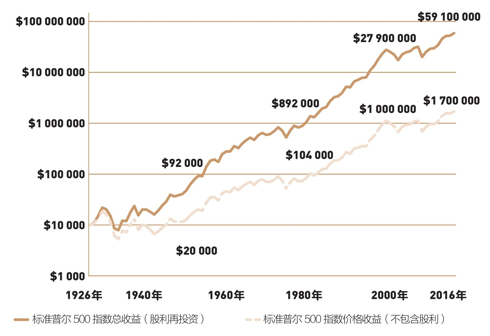
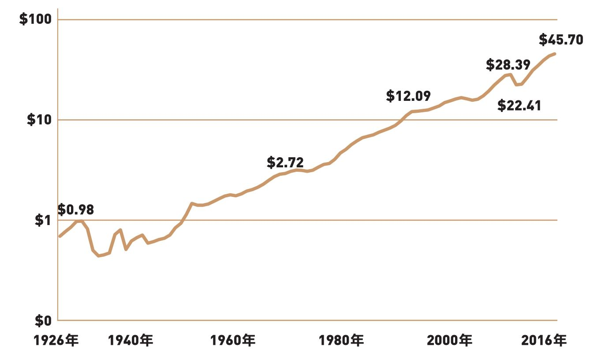
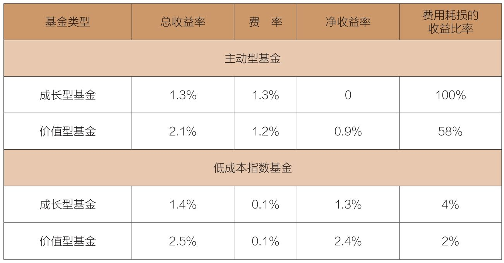

大多数投资者根本没意识到，股利收益早就被侵蚀了，指望基金经理告诉你这些，可能吗？
没有过于主动的基金经理，年费率可低至0.04%，还把股利收益分配给你，你还犹豫什么？
股利是股票市场长期收益的重要组成部分。事实上，1926年（从这一年开始，我们开始拥有关于标准普尔500指数的完整数据）以来，股利年均收益率达4.2%，占据股票市场10%的年均收益的42%。
在一个较长时期里，在复利效应的作用下，股利对市场收益的贡献超乎想象。如果不包含股利收益，1926年1月1日，投资到标准普尔500指数的1万美元，至2017年年初将增长到超过170万美元。然而，如果把股利进行再投资，这项投资将增长至5 910万美元（见图6-1）。

图6-1 标准普尔500指数价格收益与总收益
标准普尔500指数的每股股利增长非常稳定（见图6-2）。1926年以来的90年里，股利只显著减少过三次：第一次发生在“大萧条”（1929—1933年）初期，跌幅55%；第二次发生在“大萧条”后期（1938年），跌幅36%；第三次发生在2008—2009年全球金融危机期间，跌幅21%。

图6-2 标准普尔500指数的每股股利
第三次下跌主要因为银行被迫取消股利。标准普尔500指数个股股利从2008年的28.39美元下跌到2009年的22.41美元，但在2016年创新高，达到45.70美元，比2008年前的高点高出60%。
股利的长期复利效应如此惊人，而且企业分派的股利金额相对稳定，共同基金经理人十分重视股利吗？错！因为共同基金所签订的管理合约，是按基金净资产而不是股利收益收费。当股市的股利收益偏低，基金费用会消耗掉基金获得的绝大部分股利收益。
结果是，股票基金获得的大部分股利收益被费用吃掉。在主动型成长基金里，费用消耗了基金收益的100%；在主动型价值基金里，费用消耗了基金收益的58%。
主动型基金与对应的指数基金的差异非常惊人。2016年，对应的价值型指数基金的费用消耗了其收益的2%；低成本成长型指数基金的费用消耗了其收益的4%（见表6-1）。
表6-1 股利收益和基金费用，2016年

资料来源：晨星。
股利对长期收益有巨大影响，但你很可能会像大多数投资者一样，根本没有意识到你的股利收益早就被侵蚀了。你怎么会知道呢？尽管你有机会根据基金公司的财务报表计算出结果，但那些财务报告不太可能披露明确的信息。
为什么不考虑低成本指数基金？它没有过于主动的基金经理，年费率可能低到0.04%；它会把基金的股利收益合理分配给你；而且它还没有前文中提到的那些帮手。因此，为什么不呢？第13章将会进一步讨论这个构想。
“股利成长投资者”（Dividend Growth Investor）
有一位名叫“股利成长投资者”的网络博主，在得知我强调股利重要性的观点后，写了一篇热情洋溢的文章响应我的观点。
“约翰·博格是投资界的传奇人物，是当代最重要的投资者之一，我认真地读过他写的几本书，非常欣赏他提出的投资理念。
“我十分认同博格提出的有关低成本、低换手率的概念，以及继续持有、保持简单的主张……在我阅读过的博格著作中，我尤其喜欢他在股利方面提出的那些建议。
“博格呼吁关注股利分配，忽略股价波动。他指出，股票市场是一个巨大的娱乐场，投资者应该留意股利……
“博格强调，股利一直在持续增长。对退休人员而言，股利是独立收入的可靠来源……博格同时也指出，股利无法按时发放且显著减少的情况，只出现过几次……
“我真的喜欢他传达的理念：继续投资，关注股利，保持最低的投资成本，忽略股价波动。
“博格反对投资界普遍主张的持有由10～15种不同资产类别的投资方法，因为这种做法只会让贪婪的基金经理们从中收费。我们要保持简单，就是持有股票和债券。
“总之，博格强调股利重要性的观点充满真知灼见，如果你真的想让自己的生活变得更好，那么请忘掉那些基金经理的建议，并尽快拿起博格的著作阅读，用博格建议的方式来调整自己的投资计划。”